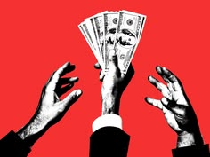

How Private Equity Contributes to Gentrification
Real Estate Private Equity works like a partnership between a general partner (GP), who manages the business, buys the land, and oversees development, and a limited partner (LP), who mostly provides the funding. Their goal is to raise money and use their expertise and influence to develop land for a profit. This drives gentrification through many different ways. One of the reasons begins with how these purchases work. When acquiring property the GP charges the LP an acquisition fee, taking a percentage whenever land is bought with the LP’s money. This encourages the GP to buy properties in bulk, which pushes out smaller organizations and individuals who might have developed neighborhood initiatives or affordable housing.Then the GP and LP negotiate expected profits, and the GP receives a bonus for exceeding them. This leads the GP to cut costs with cookie-cutter designs or to use expensive materials that attract high-income buyers.

Essentially, private equity wants to exit quickly and profitably. Firms develop land fast using standardized solutions and reused tendering files, then hold the property until prices peak before selling. LPs often fund investments through pension funds, university funds, or insurance companies, meaning public money pays for private investment. The government then feels pressured to support development to avoid social instability, which could weaken its authority, erode trust, and affect market prices. As a result, no one wants to stand in the way of development, even when it harms the city’s social fabric. When a firm receives heavy public and logistical support from the government, it may eliminate the competition and form a monopoly. Low-income families are hit hardest, since they may lose their properties or be unable to keep up with sharp inflation.